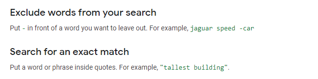
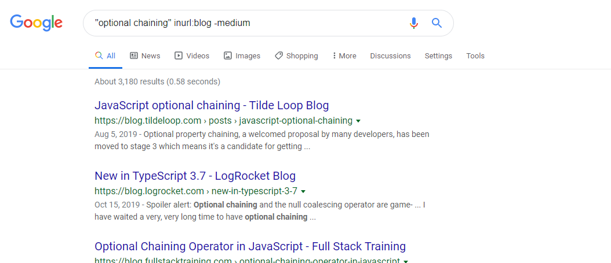
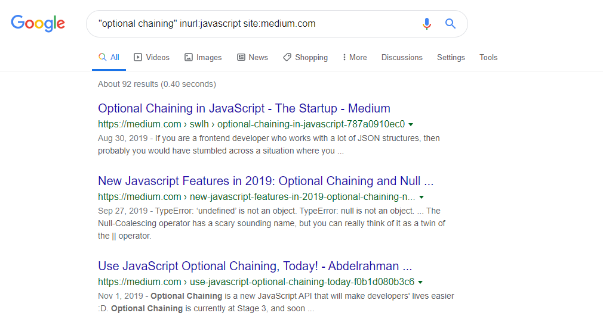
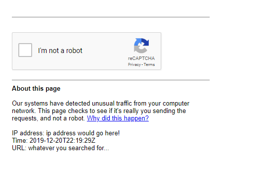
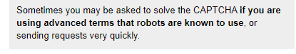
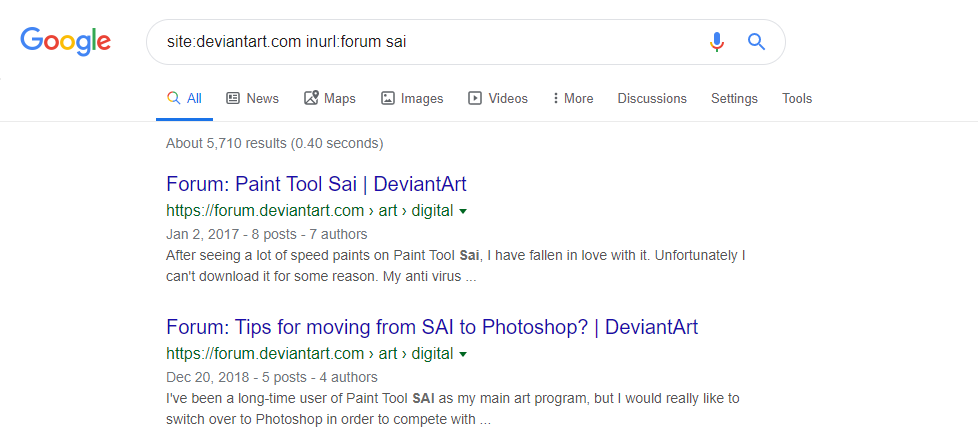
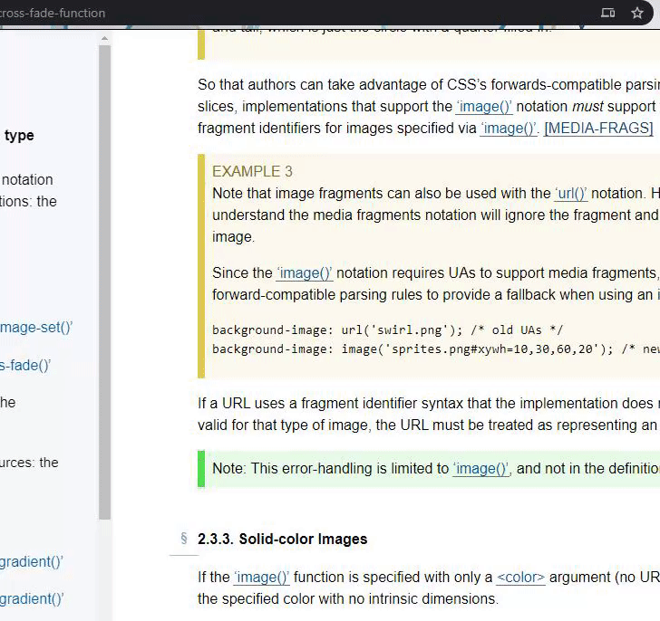
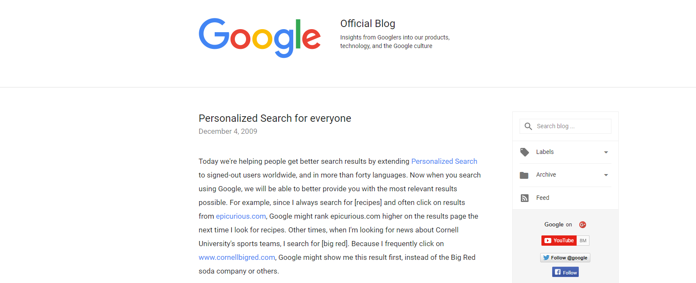

internet research techniques number two: effective text search and ugc.
Over the years, I've spent a lot of time doing research. as a completely self-taught web developer, I've gotten pretty damn good at finding things on the internet. and besides, I'm super nosy hungry for information on anything and everything. so, I've learned a lot about how to absolutely scour the depths of the web for the information I need.
anyway, something that I wanted to write about for a while is effective searching techniques. a lot of things — such as knowing where to look to find certain information — come with years of experience. "search techniques?" you might be thinking. "I already know how to use search engines, though..."
do you really though? because most people's
search techniques are like an old kitchen knife. it does the job,
but you kind of wish you could cut a little faster. if you continue
reading this series, though, I'll swap out
your blade
for a
yoshihiro mizuyaki honyaki. I already wrote a (scant)
part one to this post a while ago, so check that out if you'd like.
number one: searching for specific text.
most good search engines have special syntax for crafting better search queries. in regards to google, the best technique for finding specific text — if you already know exactly what phrase you want to find — is to just wrap your search in double quotes "like this". of course, this goes much, much deeper. the two search engines I most often use, google and duckduckgo, both have tons of special syntax that's sort of reminiscent of a query language like sql or cql. here is google's syntax, and duckduckgo's is here.. memorize just a few of these and you'll easily cut your time spent searching in half.
number two: searching complex ugc (user generated content).
okay, here's where it starts getting a little more interesting. user generated content is what makes the internet what it is. I'm talking about blog posts, forum discussions, documents, open source code, social media posts...the list goes on. here are a few things I do when searching user generated content.
one of the most important things to take into consideration here is language. it's much easier to search within ugc that's written in your native language, because you'll understand irregularities, you'll be able to mentally gloss over typos, etc. you do need to keep things like that in mind when searching.
example one: blogs, inurl, and site.
ok, I'll use a recent example from my real life. say I'm using google, and looking for information on optional chaining, and I only want to see blog-type ugc. and for the sake of the exercise let's say I don't have a way to bypass medium's paywall, so I want to exclude it:
and if I really wanted to see medium links? I'd combine the site: and inurl: operators to get really specific —
here's something you might run into as you start using more and more advanced search techniques: search engines like google will sometimes think your search traffic might be coming from a bot:
from google's explanation (emphasis mine):
and that's no big deal, it just means your searching is getting more powerful. you're becoming one with the machine.
example two: forums, discussions, and combo syntax.
forums are among the most complex information sources that can be searched on the internet. in fact, I'd like to write an entire seperate post about how to efficiently search forums. message boards, forums, and the like very often contain threads and discussions that can span hundreds of pages of highly unpredictable — and sometimes very predictable — content. this makes them difficult to search, but not impossible. the key here is to use the correct tools.
so here's the example: say I'm an artist who just found out about paint tool sai, one of the most popular illustration applications, and I want to see what other artists are saying about it. I'd want to find a forum, and I'd want to find a discussion among my peers, who I know are denizens of the notorious deviantart.com. here's what my query would look like:
I'd immediately find what I was looking for. however, what if I wanted to see other discussions going on on other sites? I could change my query to paint tool sai inurl:forum or something like that. I could also use a little extension called discussions button for google search which would construct a nasty little combo for me to find pretty much any and every forum discussion on the topic I want. with this extension, I click on that little "discussions" button in the screenshot above and my query becomes:
paint tool sai
inurl:forum|viewthread|showthread|viewtopic|showtopic|"index.php?topic"
| intext:"reading this topic"|"next thread"|"next topic"|"send
private message"
and if you're further along in your self-mechanization than me, and you've perfectly memorized search syntax, then you can do what this extension does on your own. I'm a human though (I think), so I just use the extension.
example three: using established archives.
online communities grow and change over time, some more rapidly than others. websites get restructured, content is removed or replaced, users delete their profiles and move to other sites, and so forth. as a result, sometimes you'll find yourself seeking information that technically no longer exists — at least not as it used to. this is where archives come in handy.
there are a few archive sites out there, but none are really as good as the internet archive's wayback machine. you've probably heard about this one at least once in your life, even if you don't use it every day. so say you're researching some obscure topic through a web of ancient forum threads scattered around multiple websites and you come across a thread that got wiped by mods or locked or something.
sometimes all you have to do is throw the link to the page into the wayback machine — et voilà! — (sometimes) the page will have been archived in the past and you can read it in it's original glory. example: I was reading a thread that ran from two thousand eight — two thousand nine, and one particular user's comments seemed to all be missing, leaving pretty significant gaps in the discussion. I don't know why; maybe they deleted their account or something.
I was lucky that an alexa crawler had been there way, way before me (about ten years ahead of me) and there was an archived copy on the wayback machine as a result.
the archived original thread contains the comments I needed to read, the original profile pictures, badge sprites, and the original exact timestamps. it was like going back in time and seeing exactly what the actual forum participants would have seen. it's like visiting a memorial of some event or other, and being surrounded by the ghosts of the people who were present for the actual event.
the comment I was missing in particular was posted april first, two
thousand nine at two twenty-one pm — exactly three thousand,
nine hundred fifteen days, twenty-two hours, and fifty-seven minutes
ago from the writing of this line.
Nota bene: when traversing the rapidly shifting landscape of internet ugc, keep in mind that time distortion and erosion are very real things. for example, the content that I found on that thread mentioned above was on page seven. ten years ago, that same content was on a different page, so I had to search for it in the archived copy. that's just a fairly mundane example, so watch out when you're searching. things change, so it's often more important to see the forest than the trees. you just need to understand the shape of the content — that's what informs your navigation. and that comes with experience.
if you're good enough, you can find people having similar
discussions at similar times in history across huge divides
between ugc. tracking synchronicity between even two to four
sources becomes almost exponentially more difficult as time wears
on, but it is nearly always possible. I use the term erosion when
it comes to cases like this, but it's more like dispersion, in all
honesty. just remember that (most of the time) nothing is truly
lost — if you know how to look for it.
once you find the resource you actually want, though, how do you search within it? how do you cross-reference? you need to quickly be able to parse a large amount of textual information, and jump from point to point in the page as nimbly as a web crawler could...which brings me to technique number three.
number three: cross-referencing / searching within a text resource.
cross-referencing on a page becomes much easier when you can just immediately jump to the text you want to see, right? so here's technique number three: ctrl (cmd for macs) + f / ctrl + g. both key combinations will bring up a search box to type into, and immediately jump to the word or phrase you type in.
it will even show you the amount of ocurrences of a term on a page, and you can go to the next ocurrence by hitting enter or f3.
look, I get it. you already know this one. statistics say that you most likely don't, but we both know you're the exception, right?
number four: searching for special characters.
when using a traditional search engine, sometimes special characters are ignored, or even treated like special search syntax, such as in the case of google always treating the asterisk (*) as a wildcard operator. it can be difficult to search for something that has a special character in it's name, which is why a specialized engine called symbolhound exists.
as you can see, this is mainly for people who, like me, need to search for strings with unconventional character combinations in them, mainly relating to some programming language or another. it's not super strong as a general purpose engine, and certainly is not perfect.
there are a few ways you can search for special symbols on traditional search engines, though, including using the literal spelling of the symbol you're looking for.
number five: avoiding bias.
there exists, of course, a certain amount of bias when using a search engine. there are three main biases that I'm talking about here: confirmation bias, the baader–meinhof effect, and the bias caused by search engines tracking your search history.
example one: confirmation bias and the baader–meinhof effect.
also known as the frequency illusion, this is a type of cognitive
bias that refers to humans' disposition toward noticing patterns,
names, and other information with highly increased frequency after
initially being exposed to that information. this most definitely
goes in hand with confirmation bias, and if your goal is to perform
effective, unbiased, and objective searching, you have to at least
be aware of it to try to mitigate its effects.
Nota bene: keep in mind at all times that
metacognition
is an incredibly important part of
any
research. if you don't remain aware of your own tendencies to
think of things in a certain light, or your personal biases,
your
search will only show you what you want to see.
you don't always want to find only what you think you need to know, and paying special attention to only a certain type of information can lead to unfruitful searches. for example, maybe you notice a discussion going on about a new movie you've seen recently. the thread is mostly positive information.
you continue looking for information about the movie, and you continue finding positive information — through no coincidence at all. you may conclude "oh, everyone loves this movie!" and never see any information saying otherwise, because you selectively gave attention to the information you wanted to believe. you remain unaware, even, of the scope of the information you're missing out on — you're not even aware of what you don't know. and this is only a fairly innocent example of the effects of this bias.
example two: the search history bias.

over ten years ago, google started allowing searches to be
affected by a user's search history. essentially, this introduces some result skewing based on a
user's previous searches. this effect is often not noticeable to the
average google user at all, but in some cases, it is very very
obvious. it can also be difficult to get a good example of because
it happens fairly rarely. if this is actually
affecting you, then take a look at
duckduckgo!,
which doesn't track you or your search history at all.
That's about all I want to write about for now, especially since this post is getting kind of long. there's much more to learn, so go ahead and see what you can find! you'll soon become a google-fu master yourself.
the internet is massive, and only getting larger. and no matter how obscure the thing you're researching is, chances are someone else has what you want and posted it at some point. you are never truly alone. that is the nature of the web.
if this was too basic for you though, I'll be back with a post about searching audiovisual content soon — which can be very complicated. so stay tuned if you think that's interesting! thanks for reading my disjointed posts.
now listen to this:
currently listening to:
-
ハナヒカリ
by
リーガルリリー
— (alt / shoegaze)
-
Surf Zapping
by t+pazolite —
(japanese hardcore)
-
The Artist's House
by
calum bowen
— (electronic)
-
STATIC
by
black dresses
— (volume warning - industrial noise pop)
-
AIN'T NOTHIN' LIKE A FUNKY BEAT
by
hideki naganuma
— (electro / dance)
-
Sultan's Curse
by
mastodon
— (heavy metal)
-
Lonely, It's Fate
by
pasteboy
— (house)
further reading:
- all of google's search operators.
- the wikimedia project, an absolute dragon's hoard of information.
- an article arguing that search engine bias is not necessarily bad.
- more on the nuance of search neutrality and the original paper that coined the term.
-
howstuffworks on the baader-meinhof phenomenon.